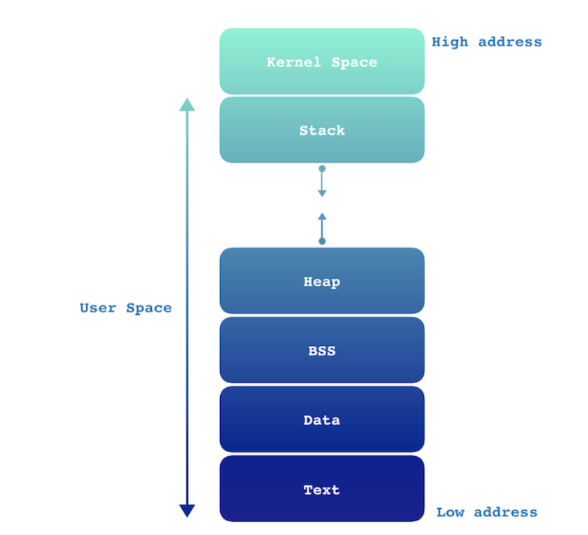

What is virtual address space?
In computing, a virtual address space(VAS) or address space is the set of ranges of virtual addresses that an operating system makes available to a process.
(https://en.wikipedia.org/wiki/Virtual_address_space#:~:text=In%20computing%2C%20a%20virtual%20address,makes%20available%20to%20a%20process.)
let's examine that.

The kernel space can be accessed by user processes only through the use of system calls that are requests in a Unix-like operating system such as input/output (I/O) or process creation.
The user space is a computational resource allocated to a user, and it is a resource that the executing program can directly access. This space can be categorized into some segments.
Stack
This area is devoted to storing all the data needed by a function call in a program. Calling a function is the same as pushing the called function execution onto the top of the stack, and once that function completes, the results are returned popping the function off the stack. The dataset pushed for function call is named a stack frame, and it contains the following data.
- the arguments (parameter values) passed to the routine
- the return address back to the routine’s caller
- space for the local variables of the routine

it runs very fast because the stack pointer register simply tracks the top of the stack.
Heap
The Heap is the segment where dynamic memory allocation usually takes place. This area commonly begins at the end of the BSS segment and grows upwards to higher memory addresses. In C, it’s managed by malloc/new, free/delete.
BSS ( Block Started by Symbol )
Uninitialized data segment, often called the BSS segment. Data in this segment is initialized by the kernel to arithmetic 0 before the program starts executing. For instance, a variable declared as static int i; would be allocated to the BSS segment.
Data
The data segment contains initialized global and static variables which have a pre-defined value and can be modified. it’s divided into a read-only and a read-write space.
For example, the following C program outside the main
int val = 3;
char String[] = "Hello World";
Text
A segment in which a machine language instruction is stored. This segment is a read-only space.
Now in buffer over flow our concern is about the stack then let's dive into that.

(https://www.udemy.com/course/practical-ethical-hacking/learn/lecture/17128126#overview)
as we can see above explanations stack is store these;
- 1)the arguments (parameter values) passed to the routine
- 2)the return address back to the routine’s caller
- 3)space for the local variables of the routine
- and stack is able to extend itself through downward. But it must stop when it reachs EBP. In buffer overflow you actually overflow the buffer space and you're reaching over EBP and into something called the EIP.
Now EIP is a pointer address or a return address, so what we can do is we can use this address to point to directions that we instruct. These directions actually going to be malicious code that gives us a reverse shell.

Spiking, is a method that we use to find the vulnerable part of the program.
in Fuzzing we're going to send a bunch of characters ar a program and see if we can break it.
In finding the offset we want to find offset and we use that offset to overwrite the ip that pointer address that we're talking about.
we're going to point out that EIP to our malicious shell code and hopefully we're gonna gain root.
Further Reading About Memory
(https://www.geeksforgeeks.org/memory-layout-of-c-program/)
(https://en.wikipedia.org/wiki/Virtual_address_space#:~:text=In%20computing%2C%20a%20virtual%20address,makes%20available%20to%20a%20process.)
(https://en.wikipedia.org/wiki/Memory_address)
(https://www.geeksforgeeks.org/logical-and-physical-address-in-operating-system/)
(https://www.geeksforgeeks.org/mapping-virtual-addresses-to-physical-addresses/)
(https://www.geeksforgeeks.org/memory-layout-of-c-program/)
Further Reading About Assembly
(https://inst.eecs.berkeley.edu/~cs161/sp15/discussions/dis06-assembly.pdf)
(https://www.cs.virginia.edu/~evans/cs216/guides/x86.html)